Crisis & Opportunity
Crisis & Opportunity

Forgotten sociology.
Racial Identity
Elise Johnson McDougald
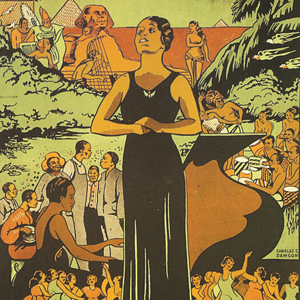 The New Negro An Interpretation,
1925.
Kelly Miller
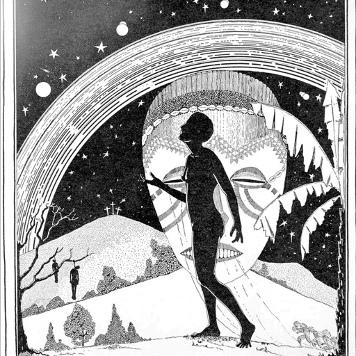 South Atlantic Quarterly,
1926.
E. Franklin Frazier
 Ebony and Topaz: A
Collectanea, 1927.
Ebony and Topaz: A
Collectanea, 1927.
Horace Mann Bond
 American Journal of Sociology,
1931.
American Journal of Sociology,
1931.
White Racism and Racial
Violence
W.E.B. Du Bois
 The Editorial
Review, 1910.
The Editorial
Review, 1910.
Charles S. Johnson
 Opportunity, 1923.
Opportunity, 1923.
Monroe N. Work
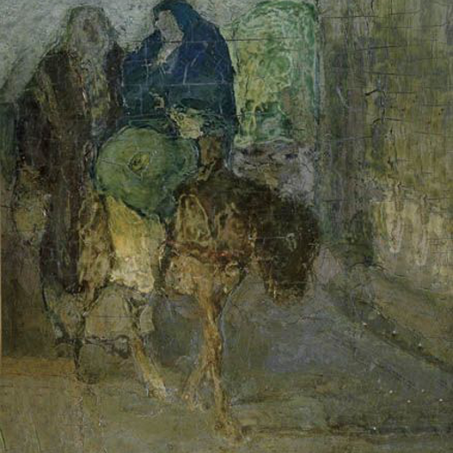 Opportunity,
1923.
Kelly Miller
 American Journal of
Sociology, 1924.
American Journal of
Sociology, 1924.
Abram L. Harris
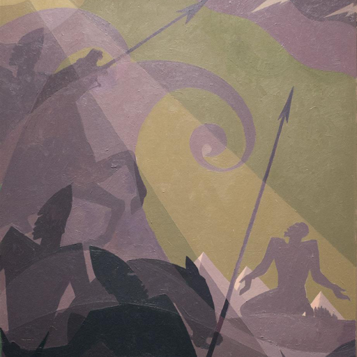 Social Forces,
1927.
E. Franklin Frazier
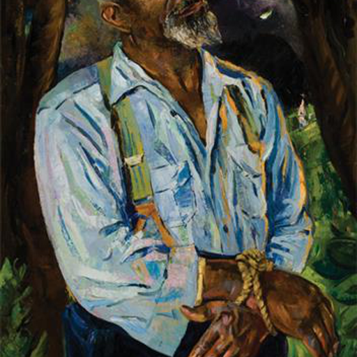 The Forum,
1927.
Great Migration and Urban
Sociology
Fannie Barrier Williams
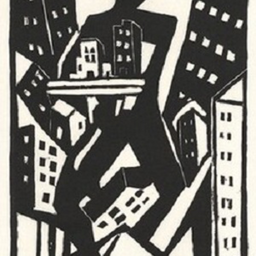 Charities, 1905.
George Edmund Haynes
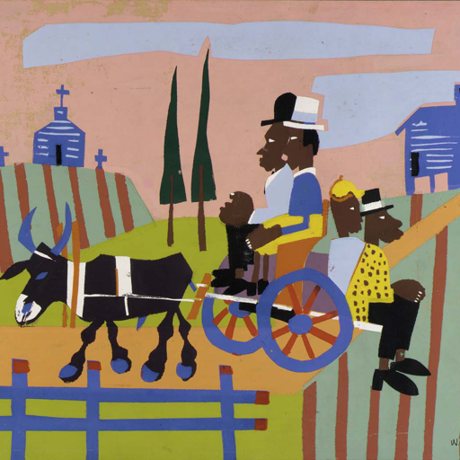 The Survey, 1918.
Charles S. Johnson
 Opportunity, 1923.
Opportunity, 1923.
E. Franklin Frazier
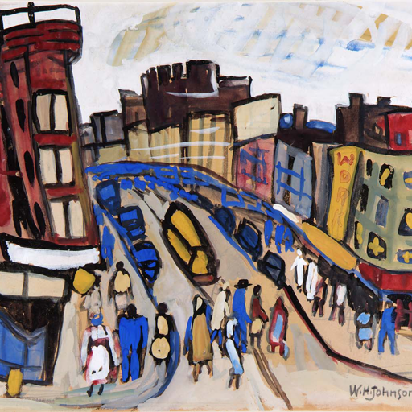 The New Negro An
Interpretation, 1925.
Charles S. Johnson
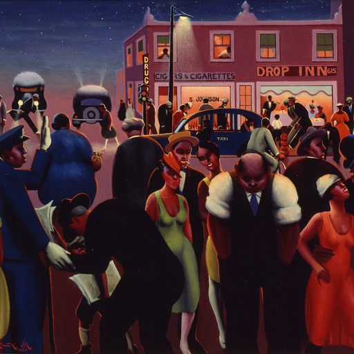 The New Negro An
Interpretation, 1925.
Eugene Kinckle Jones
 Opportunity, 1926.
Opportunity, 1926.
Kelly Miller
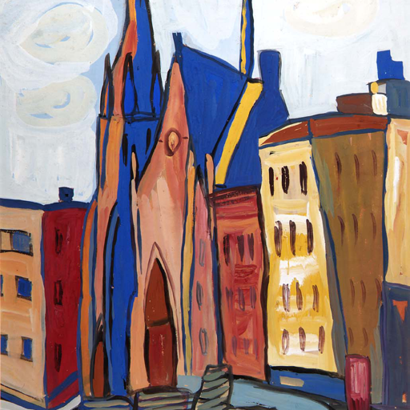 Opportunity,
1926.
Ira De A. Reid
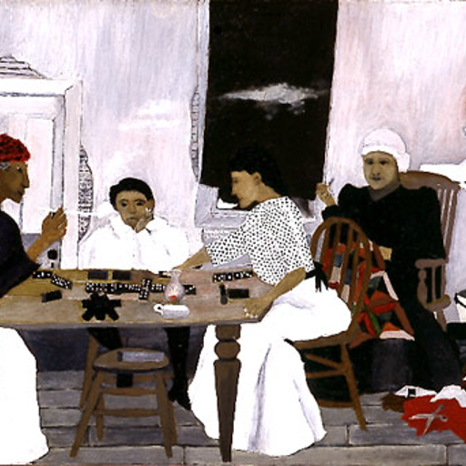 Social Forces, 1927.
Ira De A. Reid
 Ebony and Topaz: A Collectanea,
1927.
Ebony and Topaz: A Collectanea,
1927.
Labor and Economics
Richard R. Wright, Jr.
 Charities, 1905.
Charities, 1905.
W.E.B. Du Bois
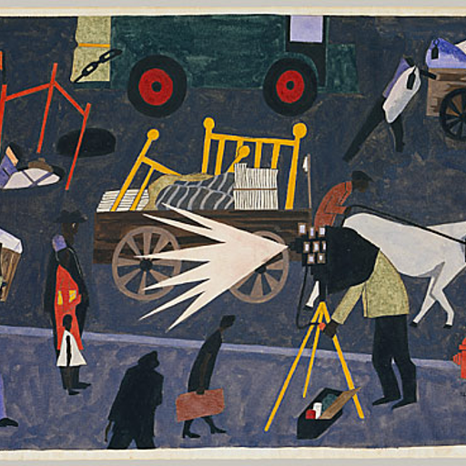 American Statistical
Association, 1910.
W.E.B. Du Bois and
Augustus Granville Dill
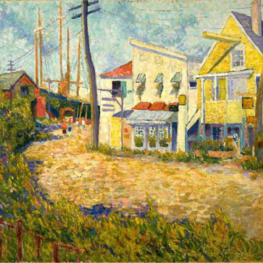 The Negro American
Artisan, 1912.
Abram L. Harris
 Social Forces, 1925.
Social Forces, 1925.
Abram L. Harris
 Current History,
1926.
Current History,
1926.
Ira De A. Reid
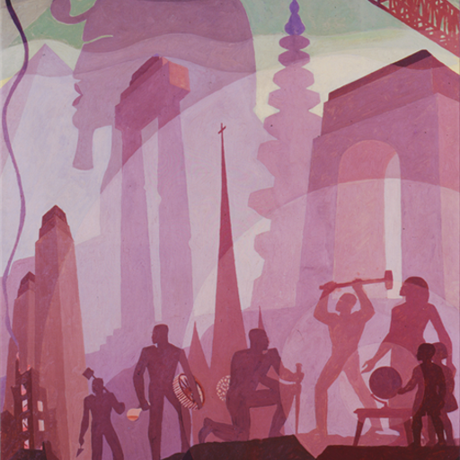
Opportunity, 1930.
Charles S. Johnson
 American Journal of
Sociology, 1935.
American Journal of
Sociology, 1935.
Charles S. Johnson
 American Journal of Sociology,
1936.
American Journal of Sociology,
1936.
Horace R. Cayton and
George S. Mitchell
 Black Workers
and the New Unions, 1939.
Black Workers
and the New Unions, 1939.
Women and Work
Elizabeth Ross Haynes
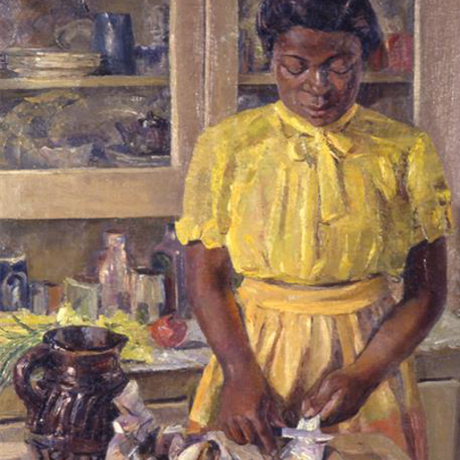 The Southern Workman, 1922.
Sadie T.M. Alexander
 Opportunity, 1930.
Opportunity, 1930.
Health and Populations
Kelly Miller
American Negro
Academy, 1897.
Monroe N. Work
 Southern Sociological
Congress, 1915.
Southern Sociological
Congress, 1915.
Kelly Miller
 The Scientific
Monthly, 1922.
The Scientific
Monthly, 1922.
Social Movements
Charles S. Johnson
 Opportunity, 1923.
Opportunity, 1923.
Abram L. Harris
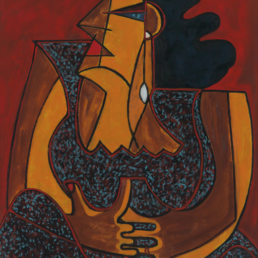
Current History, 1923.
E. Franklin Frazier
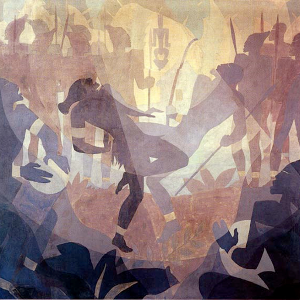 Opportunity,
1926.
Ralph J. Bunche
 Journal of Negro Education,
1935.
Journal of Negro Education,
1935.
Methods
W.E.B. Du Bois
First
Sociological Club., 1897.
W.E.B. Du Bois
The Annals, 1898.
Crime
Ida B. Wells
Reason Why the Colored American Is
Not in the World’s Columbian Exposition, 1893.
W.E.B. Du Bois
The Independent,
1899.
Monroe N. Work
 American Journal of Sociology,
1900.
American Journal of Sociology,
1900.
W.E.B. Du Bois
Missionary Review,
1901.
W.E.B. Du Bois
Some Notes on Negro
Crime, 1904.
Kelly Miller
The Southern Workman,
1909.
Monroe N. Work
The Southern Workman, 1910.
Monroe N. Work
The Annals, 1913.
Ira De A. Reid
Opportunity, 1932.
E. Franklin Frazier
Negro Family in
Chigago, 1932.
Earl R. Moses
Opportunity,
1933.
E. Franklin Frazier
Negro Family in the US,
1939.
Education
Elise Johnson McDougald
Opportunity,
1923.
Bertram W. Doyle
 The Journal of Negro
Education, 1936.
The Journal of Negro
Education, 1936.
Horace Mann Bond
 Journal of Educational
Sociology, 1940.
Journal of Educational
Sociology, 1940.
Family
E. Franklin Frazier
 Opportunity, 1926.
Opportunity, 1926.
E. Franklin Frazier
 Opportunity,
1927.
Opportunity,
1927.
Charles S. Johnson
 Race and Culture Contacts,
1934.
Race and Culture Contacts,
1934.
Forthcoming
- Thompson, Anna J. “A Survey of Crime among Negroes in Philadelphia.”
Opportunity Vol 4, July-Sept.
- Johnson, Charles S. and Horace M. Bond. “The Investigation of Racial
Differences Prior to 1910.” The Journal of Negro Education,
Vol. 3, No. 3, (Jul., 1934), pp. 328-339.
- Frazier, E. Franklin “The Status of the Negro in the American Social
Order.” The Journal of Negro Education, Vol. 4, No. 3, (Jul.,
1935), pp. 293-307
- Reid, Ira De A. “Negro Immigration to the United States.” Social
Forces, Mar., 1938, Vol. 16, No. 3 (Mar., 1938), pp. 411-417
- Andrews, Norman P. “The Negro in Politics” The Journal of Negro
History 1920 5:4, 420-436.
Social Bonds in the “Black Belt” of Chicago
Fannie Barrier Williams
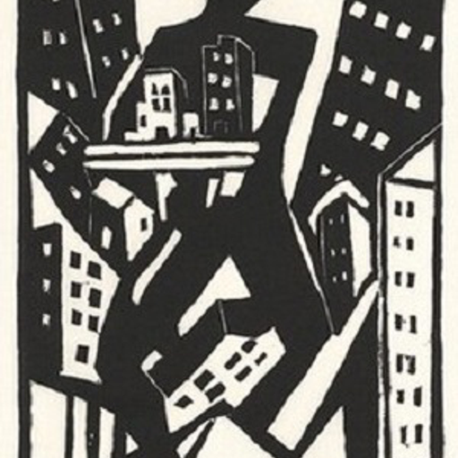 Charities, 1905.